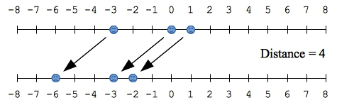
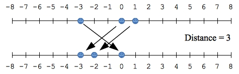
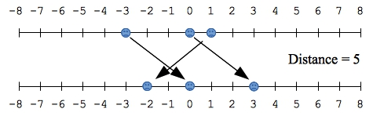
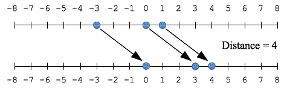

Here is the key realization. First, let's sort coordinates. Now, the cats are going to partitioned into two groups: Those that are jumping to the left, and those that are jumping to the right. A solution to this problem will be when all of the cats who are jumping the right will have lower indices than all of the cats who are jumping to the left.
Think about that. Suppose cat i is jumping to the right. And suppose that j is an index less than i. The distance between the two cats is minimized when cat j also jumps to the right. What this means is that if cat i is jumping to the right, then all cats with indices less than i have to be jumping to the right.
Similarly, suppose cat i is jumping to the left. It should be clear that all cats with indices greater than i should also be jumping to the left.
Given those two facts, it must be the case that for an optimal solution, all cats with indices less than i, for some i are jumping to the right, and all cats with indices greater than or equal to i are jumping to the left. So, one way to solve this problem is to try all values of i from 0 to coordinates.size(), and for each of these, simulate the cats jumping. Return the minimum difference from the simulation.
As always, an example helps. Let's look at example 0. Here are the four potential values of i:
|  |
|  |
|  |
|  |
Now, given a value of i, how can you determine the distance? One way would be to create an array with the new coordinates and find its min and max value. Suppose you did that with sorting, and then looking at the first and last elements. Then determining the distance would be O(n log(n)) (where n is coordinates.size()). Since there are n+1 values of i, solving the problem in this way would be O(n2 log(n)).
Instead, you can determine the min and max values by running through the new coordinates array and storing the max/min while you run through it. That is O(n), which would solve the problem in O(n2).
You can do better. Think about it -- the minimum value is going to either be the first value, or the value of the smallest cat that jumped left (if any cats jumped left). The maximum value is either going to be the last value, or the value of the greatest cat that jumped right (if any cats jumped right). Those are the only values that you need to look at.
Let's look at example 0 to be sure we understand. The original coordinates vector is { -3, 0, 1 }. When we sort it, it doesn't change.
Now, for the purposes of Topcoder, n has a maximum value of 50, so any algorithm will work in practice. However, this is a good exercise for you to figure out the best algorithm and program it up.